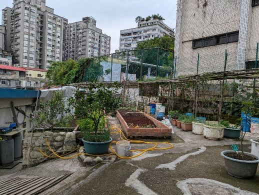
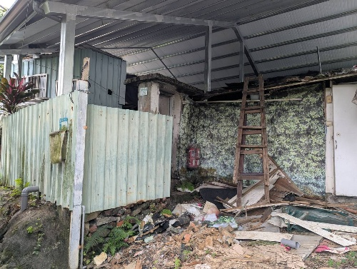
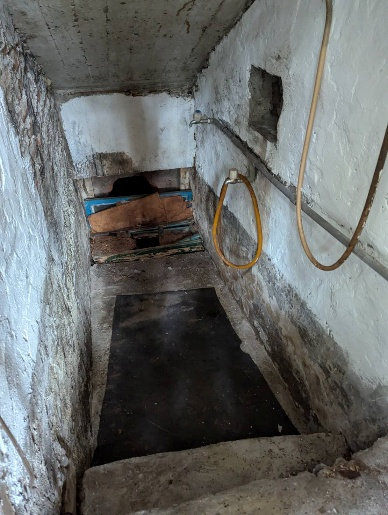

田野紀錄
把耳朵貼近地方
這一頁走入 65 巷深處。老屋、菜園、門牌與坡地，表面安靜，卻藏著教職員宿舍、老兵居住與地下通道的線索；讀它時，像沿著巷弄一步一步靠近居民的日常。
國校路65巷27號田調記錄表
國校路65巷27號田調/訪查紀錄表
紀錄者
侯淑敏
紀錄類別 （可複選）
▅人物（對象名稱〆陳大哥） □商店（類別） □老樹▅老建築 □自然景點 ▅特色景觀 □史蹟 □其他（ ）
所在位置
地址 國校路65巷27號
紀錄摘要
摘要：這份紀錄生動地還原了老屋、老故事與現代都市農夫的日常景象。
錄音中紀錄了淑敏與新店一名陳大哥及鄰居宋大姐的對話，內容交織著新店地方歷史與城市農耕生活。兩位長輩（陳大哥和宋師母）回憶了日治時期至今的地貌演變，提及消失的大坪林圳、防空洞地道（淑敏推測是礦坑通道，待查？），以及曾經存放國防檔案的機密房舍。對話中，詳盡介紹了陳大哥親手整理的居家菜園，包含各種蔬菜與果樹的種植技巧，如蘆筍、甜椒與芭樂的修剪心得。此外，訪談也觸及了土地租賃與拆遷的現實問題，呈現出當地居民對家園的情感連結。
（一）國校路65巷從15號開始到31號，到底哪幾間是教師宿舍？
根據訪談資料，從15號到31號的房舍中，教師宿舍主要集中在15號至25號這一側，而27號以後則多屬於早期老兵自行搭建的違建。
具體分類如下：
1. 教師宿舍區（15號至25號）
這部分的房舍是由學校興建並管理的宿舍，是在早期機密檔案室火災後才改建的。
宋師母原宿舍：應是15、17號。宋師母的先生曾在新店國小任教，因此分配到此宿舍。
19號、21號、23號：陳大哥提到這些編號的宿舍面積較小。
25號：也屬於宿舍區的一部分。
2. 老兵違建區（27號至31號）
這部分的土地雖然同樣由學校代管（後交還財政局），但房舍性質與上述宿舍不同：
27號：為受訪者陳大哥的住處。他明確表示，他所住的這一邊（包含27號）早期是外省老兵自行搭建的「違建」，並非學校蓋的宿舍。
29號：同樣屬於此區，陳大哥提到29號房舍旁有一個日治時期留下的防空地道入口。
31號：也是屬於這一側的違建房舍，訪談中提到這間房舍後來因政府徵收（發放70萬補償金）而拆除搬遷。
總結來說：
15、17、19、21、23、25號：屬於學校興建的教師宿舍，其中多數（如17號）已在近期拆除。
27、29、31號：屬於老兵違建，目前由住戶直接向財政部國有財產局承租。
（二）關於這片宿舍區的拆遷過程與產權變遷？
這片位於新店國小旁的宿舍區與鄰近區域，在產權與拆遷過程中有著複雜的歷史變遷，主要涵蓋了老師宿舍、老兵違建、國有地管理轉移以及建商開發計畫等面向：
1. 產權變遷與管理單位
從學校代管到國產署收回：訪談中提到的土地早期多屬學校（新店國小）代管，當時住戶是將租金交給學校戶頭。然而，約在十年前，這些土地已轉交還給財政部國有財產署（財政局）管理，目前住戶（如陳大哥）是直接向財政局承租並繳納租金。
宿舍與違建並存：此區房舍性質不同。一部分是屬於學校興建、分配給老師居住的宿舍；另一部分則是早期老兵或外省移民自行搭建的「違建」。
土地使用性質：部分拆遷區域原本被劃定為道路使用地，因此政府有權要求拆除。
2. 拆遷過程與現況
拆遷原因：許多宿舍因長期無老師居住、房舍老舊窳陋而面臨拆除。另外，若住戶不願向財政部承租，也會被要求拆除收回。
近年的拆除進度：訪談提到去（114）年到今年過年前，有一批房子已經拆除完畢，但拆完後空地已閒置約半年尚未動工。
補償與優先權：對於合法的承租戶，財政局雖調高租金（從九千多漲到一萬多元），但住戶通常擁有優先續租權。而在某些徵收或清理過程中，有住戶領取了如70萬元的補償金後搬走。
火災後的重建：歷史上此區曾發生過大規模火災（約民國40、50年代，待確認？），燒毀了原本存放國防部、警備總部機密檔案的房舍，之後才改建為木造或黑瓦的老師宿舍。
3. 未來的開發與阻礙
建商計畫與地下遺構：學校曾準備將土地賣給建商蓋新房，且建商已派人勘察。然而，開發面臨一個特殊的挑戰：這片地底下存有日治時期的防空地道。
地道影響：陳大哥提到地道深度約一米半到三米，從國小操場下方一路延伸過來，甚至與住戶房屋的地下相通。由於這些地道的存在，建商在評估基地穩固性時可能會有顧慮。
4. 租金與生活負擔
租金壓力：隨著地價上漲，財政局的租金也逐年調整。陳大哥提到目前每個月租金高達一萬多元，而某些住在「道路用地」上的老房子租金則相對便宜（約三、四千元）。
總結來說，這片宿舍區正處於從歷史舊宿舍轉型為現代開發用地的過渡期，過程中交織著國有財產法的執行、住戶的租賃權益，以及意外發現的日治地道對未來開發的潛在影響。
（三）日治時期的防空地道通往哪裡？
根據訪談中陳大哥的回憶，這片區域地底下存有日治時期挖掘的防空地道，其路徑延伸至多個地方：
通往新店國小操場：陳大哥提到，他聽聞這條地道可以通往前方，且國小操場的中間也有地道入口。
通往渡船頭（水岸）：地道的一個重要功能是通往附近的船隻停靠處（渡船頭）。在228事件或白色恐怖時期，據傳相關人員為了不走表面道路，會利用地道將抓到的人運送至下方的船隻，再經由水路運往台北。
通往禮堂（教堂）方向：訪談中也提到，地道有一部分是通向那時的教室禮堂或教堂那邊。
與住戶房屋相通：陳大哥指出在他居住的29號房舍最旁邊，就有一個地道入口，他曾親自下去查看過，描述裡面非常陰暗。
這些地道深度大約在一米半到三米深（或稱「三個人深」），構造如同公寓樓梯般有台階可以走下去。雖然現今許多入口已被填平或掩蓋，但這些地道的存在曾是建商評估開發此區時的一大考量。
（九）陳大哥的城市農園
陳大哥在新店國小旁的這片土地上，利用自製的肥料（如豆渣、咖啡渣、十四張農地的土）經營著一座多樣化的城市農園。根據訪談內容，他在菜園裡種植了許多有趣的植物、蔬菜與水果。他也介紹了北宜路上的兩家菜苗行（菜栽行），他園裡的菜苗多來自於此。
陳大哥對這些植物非常有研究，他不僅親手搭建花圃與圍籬，還非常瞭解各種植物的修剪技巧與生長週期（如番茄和柑橘需要修剪枝牙才能結果），讓這片原本可能被廢棄的區域顯得生機蓬勃且整齊有序。
左上：65巷底通往27號陳大哥家與菜園左下：65巷29號 防空洞所在地（礦坑隧道？）右上：菜園一覽右下：29號 防空洞口已封，有2層石階梯彷彿可下通（礦坑隧道？）
同行光影
光影也替地方作證


